Obrador exclusivo
No entra ni una harina con gluten. Sin contaminación cruzada, sin sustos.
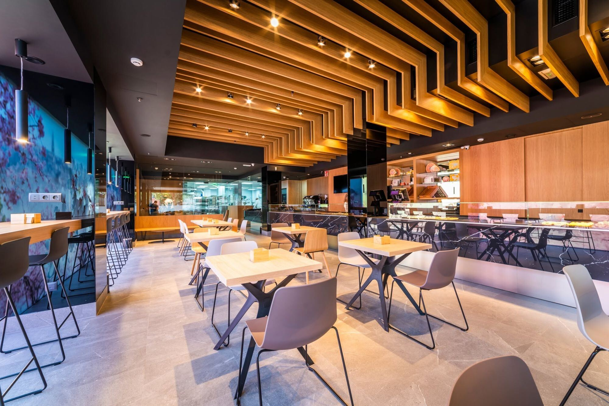
Tranquilidad en cada bocado
En 2019 abrimos Brunch Santo Tomé como un espacio gastronómico dedicado por completo a la elaboración sin gluten. Fuimos pioneros en elaborar mazapán certificado sin gluten: el primer obrador de España con la certificación Espiga Barrada. Hoy todo lo que sale de nuestro obrador es sin gluten.
No entra ni una harina con gluten. Sin contaminación cruzada, sin sustos.
Nuestro mazapán de siempre: 57% almendra Marcona, azúcar y un toque de miel. Certificado sin gluten.
Siéntate a desayunar sin preocuparte: dulce, salado y buen café en un local tranquilo.
Nuestro obrador
El obrador está a la vista, detrás del cristal. Ahí se hornean el pan, el hojaldre y la bollería que luego sirves en la cafetería o te llevas a casa.
Ver lo que hacemos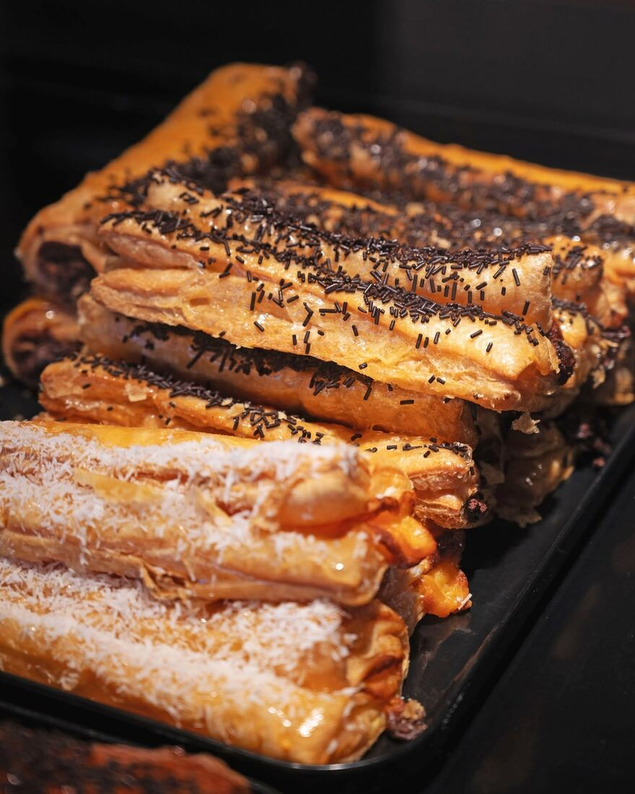
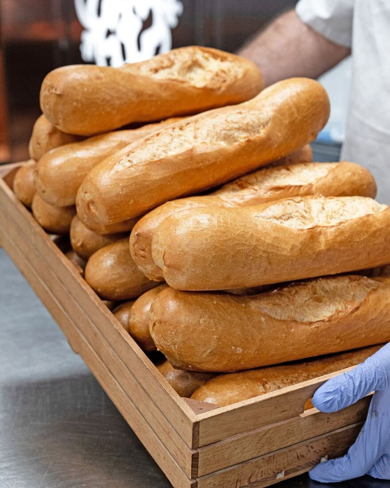
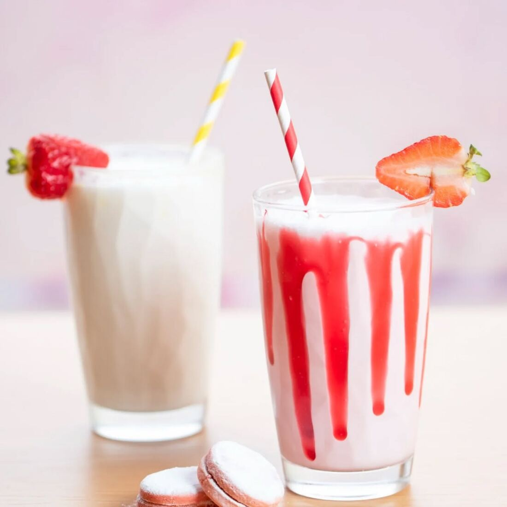
Hecho cada día en nuestro obrador
Todo sin gluten, de lo dulce a lo salado. Pregunta en barra por las especialidades del día.
Hecho a mano
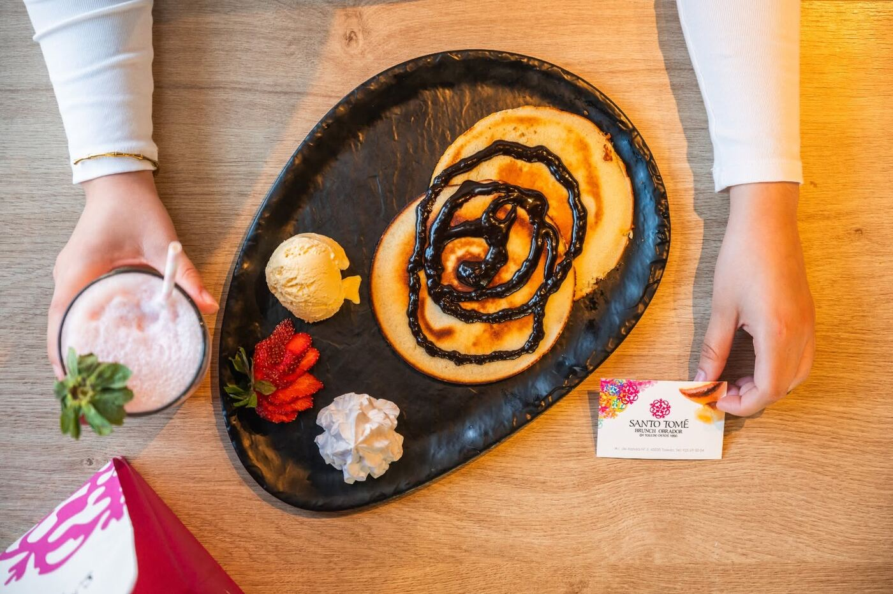
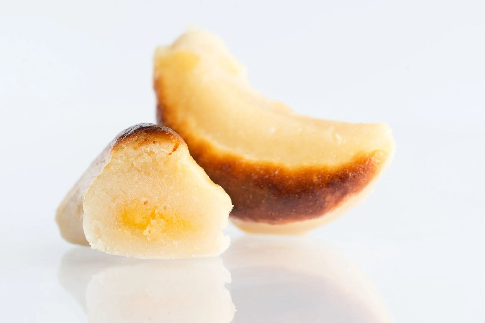
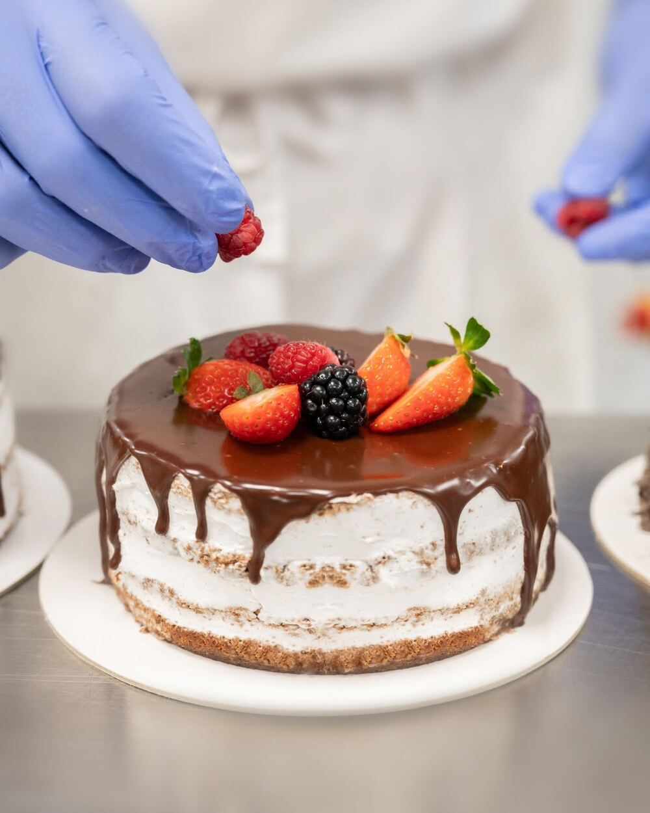
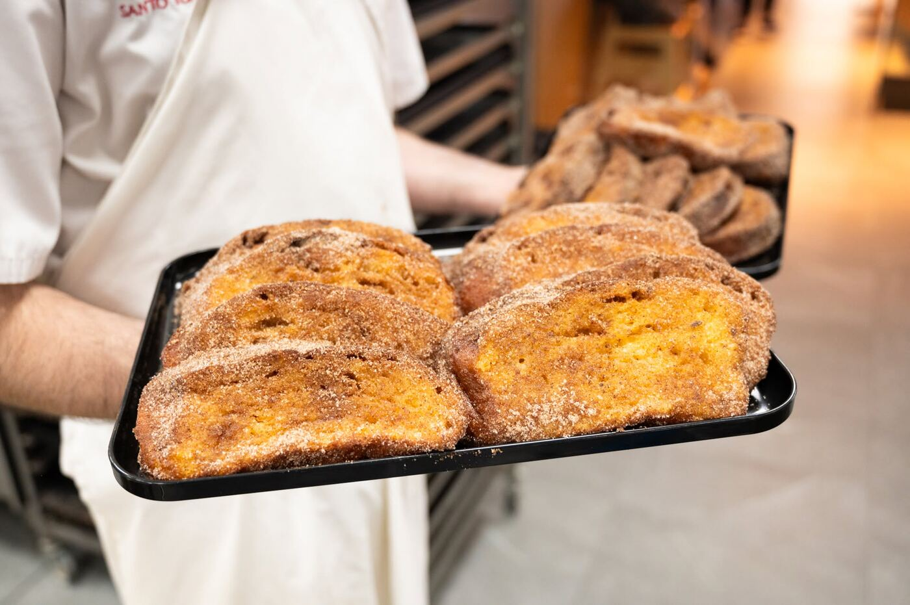
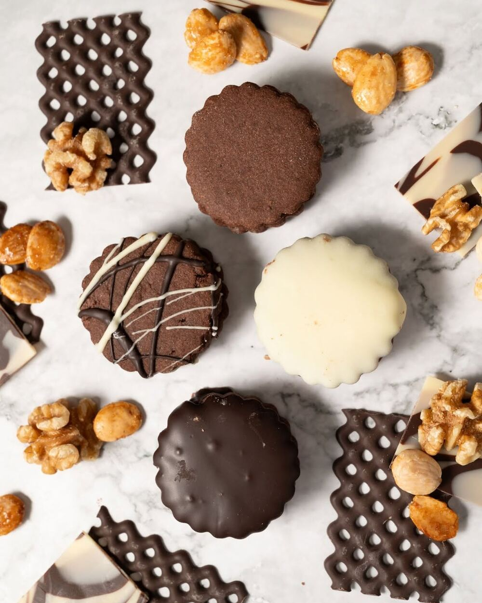
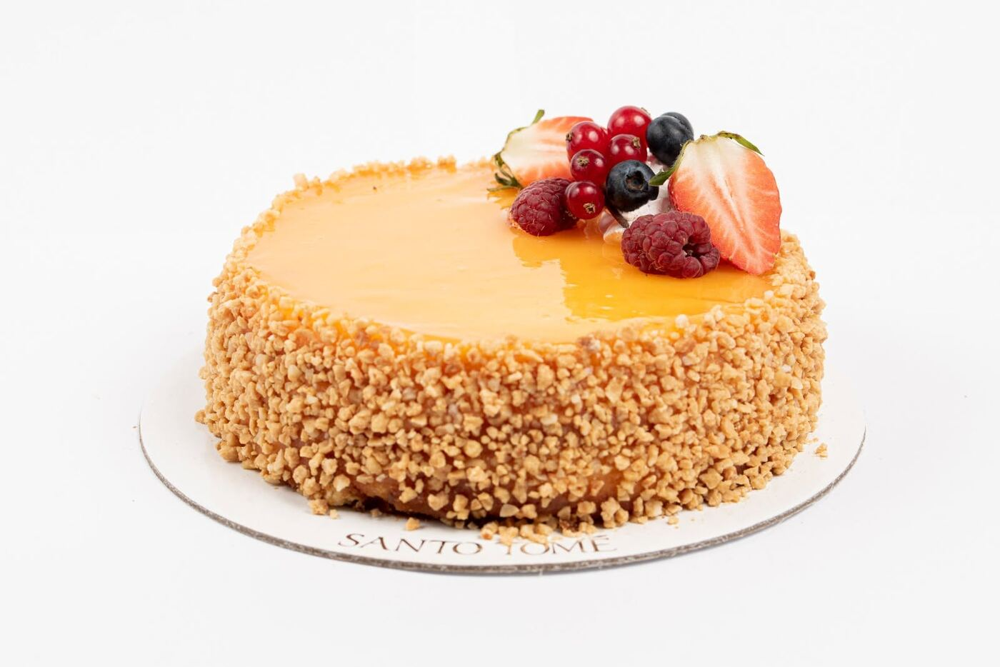
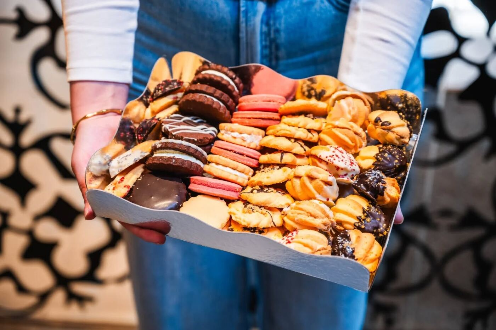
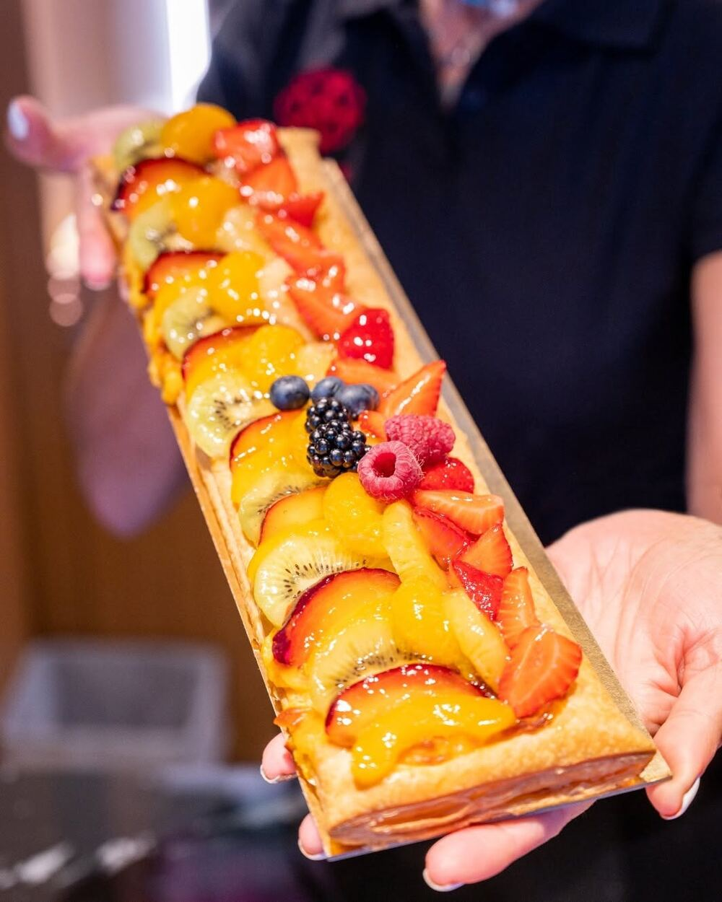
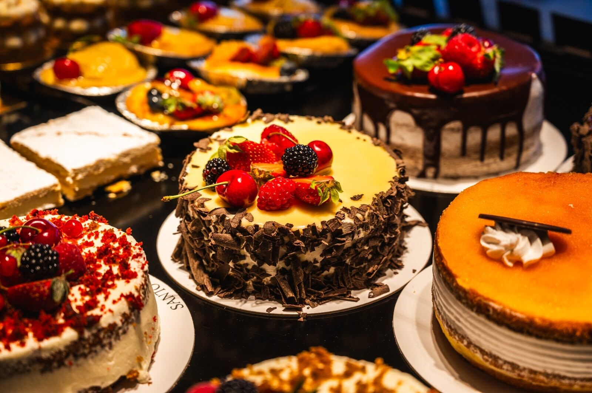
Por encargo
Tartas de nata, San Marcos, red velvet o tiras de hojaldre con fruta, sin gluten y en tamaño para 4–6 o 6–8 personas.
Encargar por WhatsAppHorario
De lunes a domingo, de 8:30 a 15:30. Ven a desayunar, a por el pan recién hecho o a tomar algo a media mañana.
| Lunes | 8:30 – 15:30 |
|---|---|
| Martes | 8:30 – 15:30 |
| Miércoles | 8:30 – 15:30 |
| Jueves | 8:30 – 15:30 |
| Viernes | 8:30 – 15:30 |
| Sábado | 8:30 – 15:30 |
| Domingo | 8:30 – 15:30 |
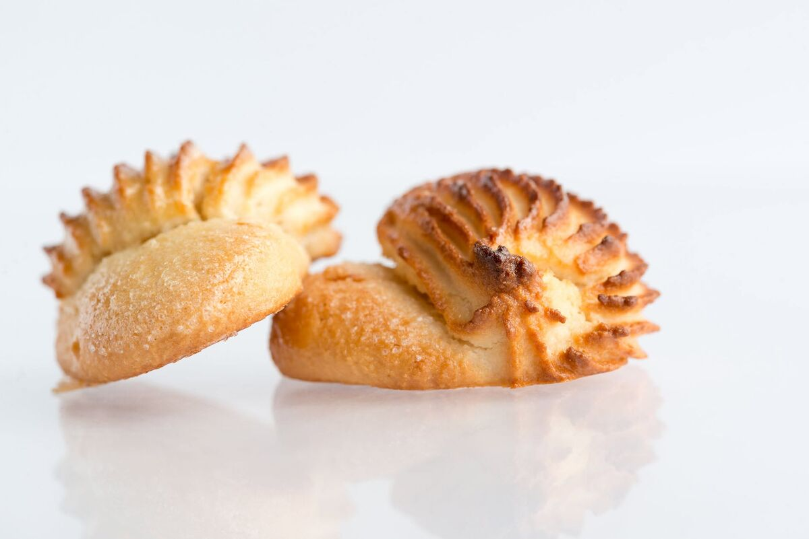
Siete generaciones de oficio
Santo Tomé abrió sus puertas en 1856 en pleno casco histórico de Toledo, y desde entonces siete generaciones de la misma familia han elaborado mazapán de forma 100% artesanal.
Brunch Santo Tomé es nuestra forma de abrir esa tradición a todo el mundo: las mismas recetas y el mismo cuidado, en un obrador donde el gluten no tiene sitio.
Lo que dicen nuestros clientes
“El hojaldre está muy bien conseguido, se notan las capas y queda muy crujiente. El chocolate es una pasada.”
Opinión de cliente
“Paraíso sin gluten en Toledo.”
Opinión en Tripadvisor
Síguenos en Instagram: @brunchsantotome
Te esperamos